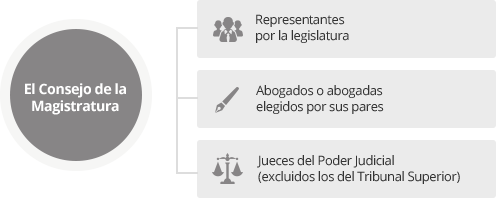

ORGANIGRAMA
Acerca del Consejo de la Magistratura de la Ciudad
El Consejo integra el Poder Judicial de la Ciudad Autónoma de Buenos Aires, junto al el Tribunal Superior de Justicia, los Tribunales de la Ciudad y el Ministerio Público.
El Poder Judicial de la CABA está integrado por el Tribunal Superior de Justicia, el Consejo de la Magistratura, el fuero Contencioso Administrativo y Tributario, el fuero Penal, Contravencional y de Faltas, los demás tribunales que la ley establezca y el Ministerio Público. “El Consejo de la Magistratura es el área administrativa de este Poder Judicial. Conforma un cuerpo colegiado, integrado por 9 miembros, representados de la siguiente forma: 3 representantes por la legislatura 3 jueces del Poder Judicial (excluidos los del Tribunal Superior) 3 abogados o abogadas elegidos por sus pares Tiene entre sus funciones principales el proceso de selección, sanción y propuesta de remoción de Jueces y/o funcionarios o empleados; y la administración de recursos que la ley le asigne. Asimismo el Poder Judicial cuenta con área jurisdiccional cuya función es la administración de Justicia conforme a las transferencias de competencias que oportunamente la Nación hizo a la Ciudad, el fuero Contencioso Administrativo y Tributario, el fuero Penal, Contravencional y de Faltas, los demás tribunales que la ley establezca y el Ministerio Público.
AUTORIDADES DEL CMCABA
- Presidente: Dr. Maques Alberto
- Vicepresidente 1º: Dr. Quintana Francisco
- Vicepresidenta 2º: Dra. Schafrik Fabiana Haydee
- Consejera:Dra. Salvatelli Ana
- Consejera: Dra. Correa, Maria Julia
- Consejero: Dr. Rua, Gonzalo Segundo
- Consejero: Dr. Biglieri, Alberto
- Consejera: Dra. Hers Carabajal, Anabella
- Consejero: Dr. Zanetta, Juan Pablo